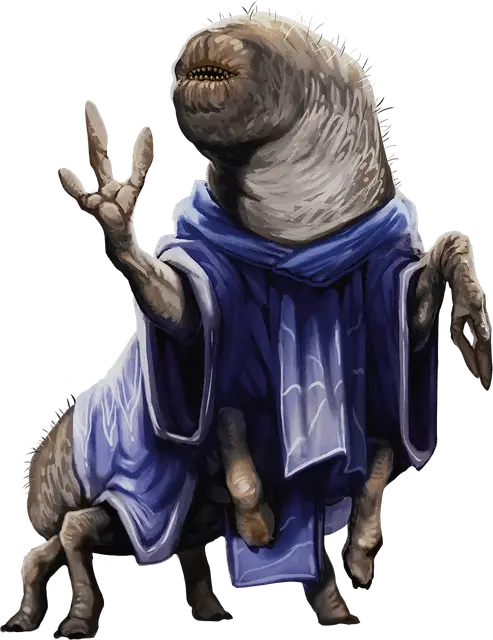

Псурлон
Psurlon
Средняя Аберрация, обычно законно-злая

Класс Доспеха 15 (доспех мага)
Хиты 45 (7к8 + 14)
Скорость 30 футов
| мод | спас | ||
|---|---|---|---|
| СИЛ | 14 | +2 | +2 |
| ЛОВ | 14 | +2 | +2 |
| ТЕЛ | 14 | +2 | +2 |
| мод | спас | ||
|---|---|---|---|
| ИНТ | 17 | +3 | +3 |
| МДР | 11 | +0 | +0 |
| ХАР | 7 | −2 | −2 |
Сопротивление урону психическая энергия
Иммунитет к состояниям ослепление, очарование
Чувства слепое зрение 120 футов (слеп за его пределами), пассивное Восприятие 10
Языки Глубинная речь, Телепатия 120 фт.
Опасность 2 (450 опыта)
Бонус мастерства +2
Особенности
Аберрантный разум. Невозможно магическим образом прочитать мысли псурлона или усыпить его.
Действия
Мультиатака. Псурлон совершает одну атаку Укусом и две атаки Когтями.
Укус. . Рукопашная атака оружием: +4 к попаданию, досягаемость 5 фт., одно существо. Попадание: 6 (1к8 + 2) колющего урона.
Коготь. . Рукопашная атака оружием: +4 к попаданию, досягаемость 5 фт., одна цель. Попадание: 4 (1к4 + 2) рубящего урона.
Психическое сокрушение. Псурлон выбирает в качестве цели одно существо, которое он может видеть в пределах 120 футов. Цель должна совершить спасбросок Мудрости Сл 13, получая 14 (2к10 + 3) урона психической энергией при провале или половину этого урона при успехе.
Использование заклинаний (псионика). Базовой характеристикой псурлона является Интеллект (Сл спасброска от заклинаний 13). Он может накладывать следующие заклинания, не нуждаясь ни в каких компонентах:
• 2/день каждое: доспехи мага [mage armor] (только на себя), маскировка [disguise self];
• 1/день: внушение [suggestion].
Описание
Псурлоны — злобные, червеобразные существа, живущие на Астральном плане. Полностью выросший экземпляр достигает 7 футов в длину. Их ноги оканчиваются копытами, а руки — кистями с тремя длинными пальцами. Безглазая голова псурлона напоминает голову земляного червя, увенчанную зубастой пастью. Псурлоны облачаются в богато украшенные одежды и редко носят доспехи и оружие.
Псурлоны живут тысячи лет, поскольку большую часть времени проводят в Глубоком Астрале. Каждые сто лет или около того псурлоны покидают свои астральные крепости и вторгаются в системы Дикого космоса. Они устраивают семилетнюю церемонию под названием «Пир миров», во время которой стараются сожрать столько разумных форм жизни, сколько могут, а потом возвращаются на Астральный план. Псурлоны предпочитают плоть людей и полуросликов, но не прочь полакомиться и другими существами. Они используют свои заклинательные способности, чтобы проникать в поселения своих жертв.
На Материальном плане псурлоны известны сотрудничеством со свежевателями разума. Вместе они собирают урожай жертв: иллитиды пожирают их мозг, а псурлоны поглощают остальные части. Гитъянки презирают псурлонов за этот союз и повсюду в Глубоком Астрале нападают на их крепости.
Когда псурлон умирает, другие помещают его труп в безопасное место. Когда труп разлагается, псурлоны откладывают в него одно или несколько яиц. Через 24 часа из этих яиц вылупляются Крошечные черви. В течение следующих семи дней черви питаются трупом и друг другом, пока не останется только один. Этот червь выползает из гниющих останков мертвого носителя уже в виде взрослого псурлона.